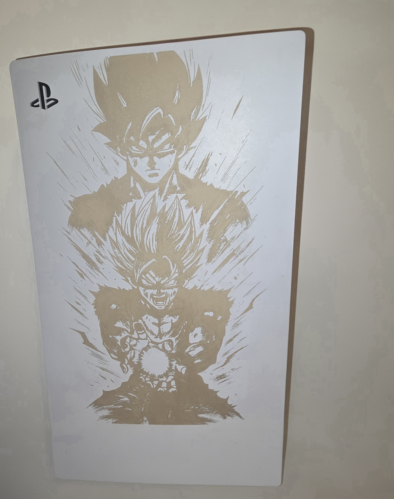

Gravures sur capots PS5
Exemples de réalisations gravées sur les capots de PlayStation 5.
Aucune peinture, aucun autocollant — uniquement la gravure laser.

Capot PS5
Travaux sur bois
Outil gravé
Plaque métal
Cuir gravé
Acrylique gravé
Impression 3D
← Nouveau bouton ajouté
← Retour à l'accueil